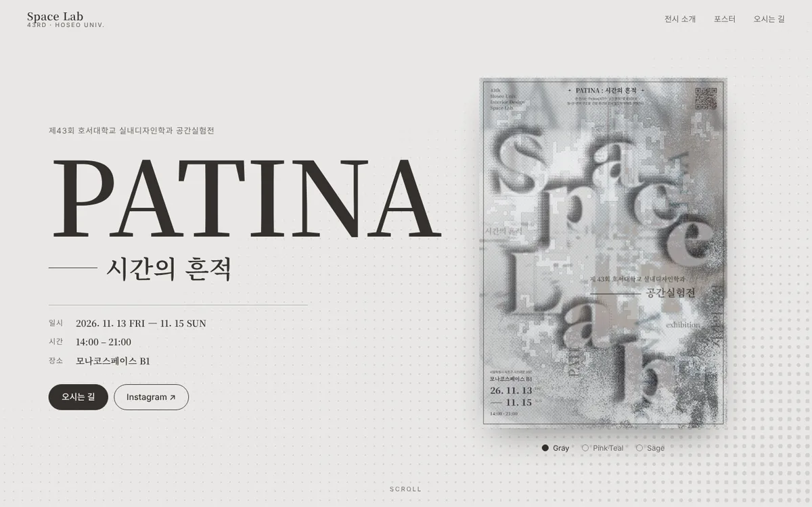
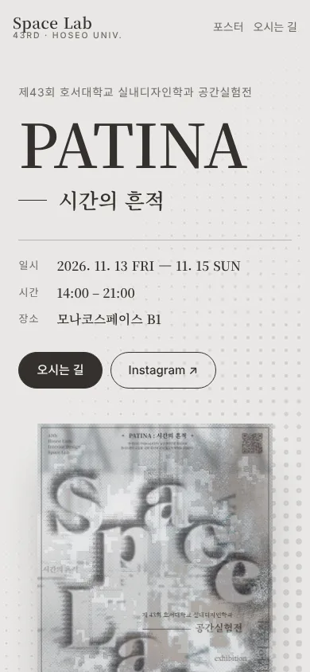
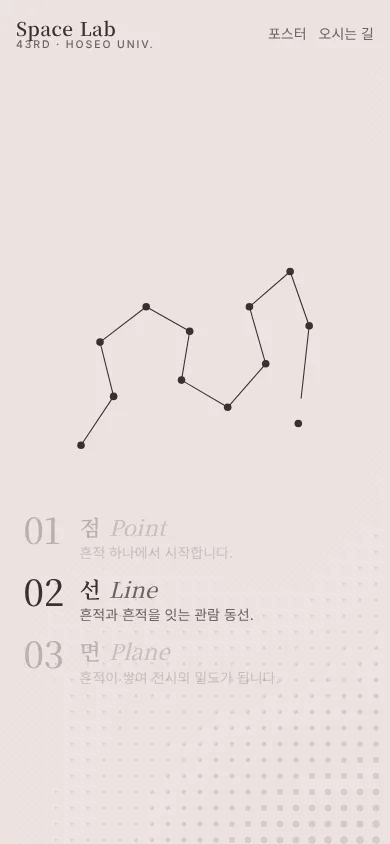
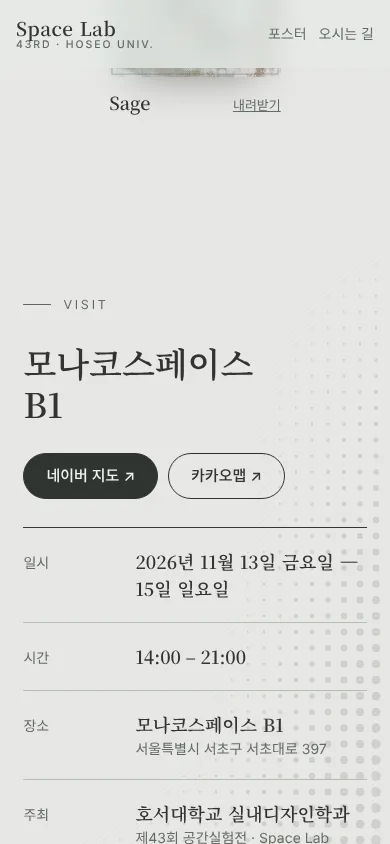

졸업연구 10주차 · 웹 포트폴리오 예시
포스터 3장으로
전시 사이트를 만들고 올리기까지
제43회 공간실험전 「PATINA : 시간의 흔적」 포스터만 가지고 한 페이지 사이트를 만들어 GitHub Pages에 올렸습니다. 같은 순서로 여러분의 졸업작품 사이트를 만들 수 있습니다.
Part 1
만드는 과정 6단계
코드를 쓰는 시간보다 재료와 순서를 정하는 시간이 더 깁니다. AI(클로드 코드)는 4단계에서 실행만 맡았습니다.
01재료 모으기
- 포스터 3장: 그레이 · 핑크·틸 · 세이지 (각 1820×2576px, jpg 약 1.8MB)
- 포스터의 글을 그대로 옮겨 적기: 전시명, 소개문, 회차·학과, 장소·주소, 날짜·시간
- 포스터 오른쪽 위 QR 코드 읽기 → 학과 인스타그램
instagram.com/hsu_spacedesign - 포스터에 없는 정보는 만들지 않습니다. 참여 학생 명단, 작품 설명처럼 없는 내용은 넣지 않았습니다.
02섹션 순서 정하기
보는 사람이 묻는 순서대로 놓습니다. 무엇인가 → 어떤 전시인가 → 어떻게 생겼나 → 어디로 가나.
| 섹션 | 보여주는 것 | 가져온 곳 |
|---|---|---|
| 첫 화면 | 전시명 · 날짜 · 장소 + 포스터 | 포스터 위·아래 글 |
| 전시 소개 | 소개문 한 문장을 크게 | 포스터 위쪽 소개문 |
| 점 · 선 · 면 | 스크롤하면 점 → 선 → 면이 그려지는 도식 | 소개문의 '점–선–면' |
| 포스터 | 3종 크게 보기 · 내려받기 | 포스터 파일 |
| 오시는 길 | 주소 · 시간 · 지도 · 인스타그램 | 포스터 아래쪽 글, QR |
03디자인은 포스터에서 가져오기
- 색: 포스터 3종에서 배경색을 뽑아 5.2초마다 바뀌게 했습니다. 그레이 핑크 틸 세이지
- 글꼴: 영문 제목 Cormorant Garamond, 국문 제목 Noto Serif KR, 본문 Noto Sans KR (모두 Google Fonts 무료)
- 움직임 두 가지만: 포스터의 망점(halftone)을 배경 점으로 바꿔 천천히 움직이게 하고, 소개문의 점·선·면을 스크롤 도식으로 만들었습니다.
04클로드 코드에 지시하기
1~3단계에서 정한 내용을 그대로 문장으로 옮기면 지시문이 됩니다. 예를 들면 이렇습니다.
결과를 보고 고칠 점을 다시 말로 지시합니다. 이번에는 '면' 도식이 회색 덩어리로 보여서, 점에 가까울수록 크게 쌓이는 망점으로 한 번 고쳤습니다.
05이미지 줄이기
| 파일 | 크기 | 용도 |
|---|---|---|
| 원본 포스터 jpg | 약 1.8MB × 3 | 보관용 (올리지 않음) |
| poster-○○.webp (가로 1200px) | 약 410–450KB | 첫 화면 · 크게 보기 · 내려받기 |
| poster-○○-sm.webp (가로 600px) | 약 110–120KB | 포스터 목록 |
사이트 전체가 약 2MB입니다. 폰에서도 첫 화면이 바로 뜹니다.
patina/ ├─ index.html ← 사이트 한 장 (글 · 디자인 · 움직임 모두) ├─ making.html ← 지금 보는 안내 페이지 └─ img/ ├─ poster-gray.webp · poster-pink.webp · poster-sage.webp ├─ poster-gray-sm.webp · poster-pink-sm.webp · poster-sage-sm.webp └─ og.jpg (링크 공유할 때 뜨는 미리보기 그림) · icon.png
06노트북과 폰으로 확인하기




- 폰에서 옆으로 밀리는 화면이 없는가
- 글자가 잘리거나 겹치지 않는가
- 지도 · 인스타그램 링크가 열리는가
- 첫 화면에 전시명 · 날짜 · 장소가 다 보이는가
- 포스터에 없는 내용이 들어가지 않았는가
Part 2
GitHub에 올리기
GitHub Pages는 공개(Public) 저장소면 무료로 사이트 주소를 줍니다. 방법은 두 가지이고 결과는 같습니다.
프로그램 설치 없이 파일을 끌어다 놓기. 처음 하는 사람에게 맞습니다.
말로 지시하면 올리기까지 해 줍니다. 이번 PATINA 사이트는 이 방법으로 올렸습니다.
A. 웹 브라우저로 올리기
- 가입 — github.com에서 계정을 만듭니다. 아이디가 주소에 들어가니 짧고 읽기 쉽게 정하세요.
- 저장소 만들기 — 오른쪽 위 + 메뉴 → New repository.
이름을아이디.github.io로 하면 주소가https://아이디.github.io/, 다른 이름(예:portfolio)이면https://아이디.github.io/portfolio/가 됩니다.
Public 선택 → Add README 켜기 → Create repository - 파일 올리기 — 저장소 첫 화면에서 Add file → Upload files.
index.html과img폴더를 끌어다 놓고, Commit message에 한 줄 적은 뒤 Commit changes. - Pages 켜기 — Settings → 왼쪽 Pages → Build and deployment의 Source에서 Deploy from a branch → Branch main, 폴더 / (root) → Save
- 주소 확인 — 몇 분(최대 10분) 뒤 같은 Pages 화면 위쪽에 주소와 Visit site가 나옵니다. 폰으로 열어 6단계 체크리스트를 다시 봅니다.
- 고칠 때 — 고친 파일을 같은 이름으로 다시 Upload files 하면 덮어써집니다. 반영까지 몇 분 걸립니다.
index.html은 맨 위에. 저장소 맨 위(루트)에 index.html이 있어야 주소를 열면 바로 첫 화면이 나옵니다. 폴더 안에 넣으면 주소 뒤에 폴더 이름을 붙여야 열립니다. 이 사이트가 …github.io/patina/인 이유입니다.
| 알아 둘 제한 | 내용 |
|---|---|
| 브라우저 업로드 | 파일 하나 25MB까지, 한 번에 100개까지 |
| 그보다 큰 파일 | 100MB까지는 명령어(Git)로, 넘으면 Git LFS 필요 |
| 무료 계정 | Pages는 Public 저장소에서만 |
| 영상 | 사이트에 직접 올리지 말고 유튜브 '일부 공개' 링크로 넣기 |
B. 클로드 코드로 올리기
클로드 코드가 파일을 저장소에 넣고(커밋) GitHub로 보냅니다(푸시). 1~2분 뒤 https://아이디.github.io/patina/로 열립니다. 8주차에 배운 GitHub Desktop의 Commit → Push와 같은 일입니다.